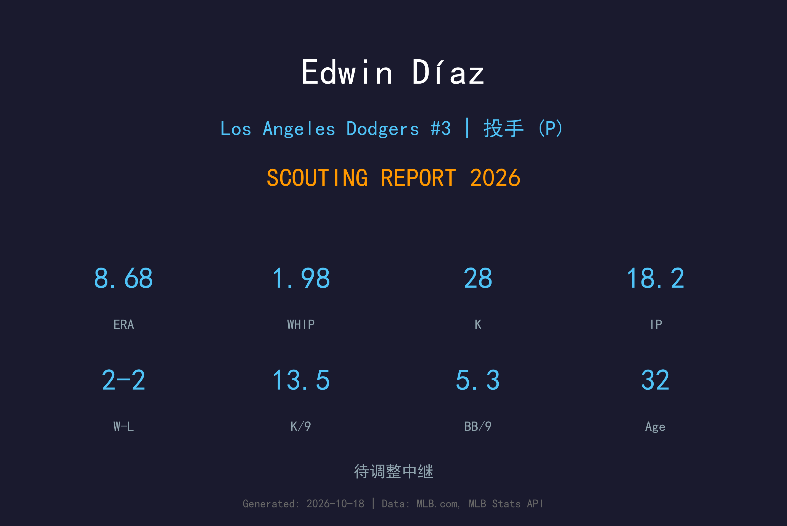
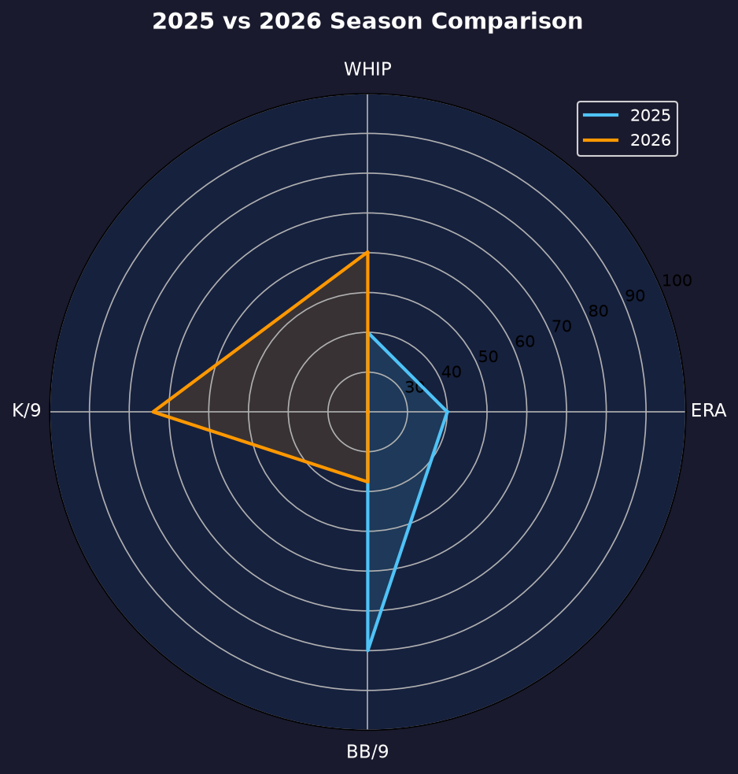
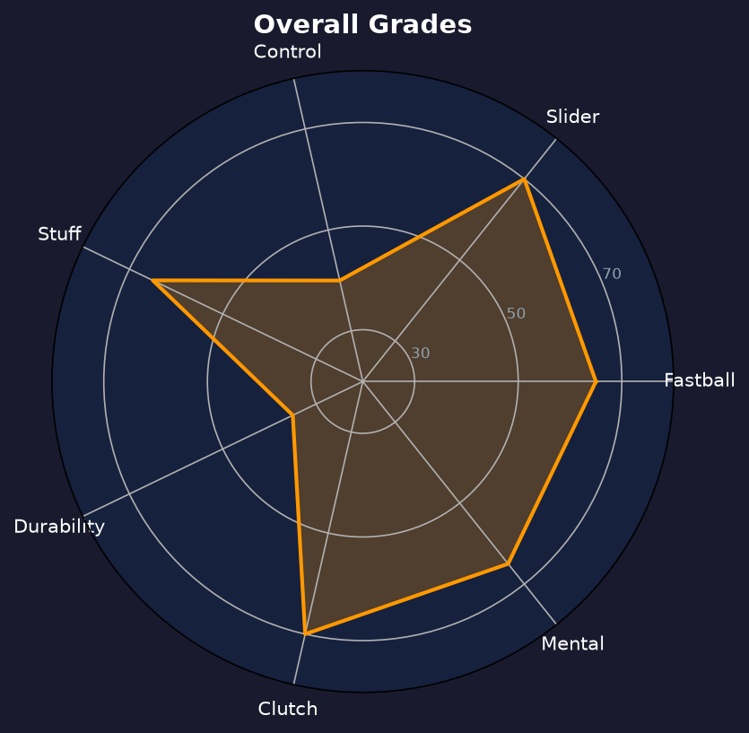

Los Angeles Dodgers #39 | 终结者（右投） | 右投 / 右打 | 天空哨声

Edwin Díaz 是棒球史上最贵的后援投手之一，以 100mph 速球、暴力滑球与标志性的"天空哨声"庆祝动作闻名。2026年加盟道奇的首个赛季，却成为他职业生涯最离奇的一年。
常规赛他因伤病与状态仅出赛21场，缴出 8.68 ERA、1.98 WHIP 的灾难成绩单，7次救援成功对4次失败。所有人都以为他的巅峰已过——但季后赛的 Díaz 仿佛是另一个人：6局仅2安打、1.50 ERA、0.33 WHIP、2次救援成功、0保送。
32岁的 Díaz 用行动证明，他的 stuff 仍在巅峰。2026年的常规赛低谷是伤病与调整期的叠加，季后赛的触底反弹则为他赢得了2027年的救赎机会。
2018年单季57次救援成功，四次入选全明星，多次入选年度最佳后援投手票选前列。
他的入场音乐《Narco》成为全球流行文化现象，"天空哨声"成为 MLB 最具辨识度的庆祝动作。
以创纪录的后援合约加盟洛杉矶，与 Tanner Scott 组成豪华终结者双人组。

2025年效力于纽约大都会（不在道奇系统内，无对比数据）。2026年加盟道奇后因伤病与机械调整仅出赛21场。
主战球种，占全部配球的 55.7%，均速 96.5 mph。直上直下的四缝线速球，负责抢好球数与建立球数领先，是所有配球的基准。
主战球种，占全部配球的 43.5%，均速 89.4 mph。传统滑球横向位移锐利，是两好球后的主要挥空武器。
8.68 ERA 是 Díaz 生涯最差，但细究数据会发现他的三振率仍达 13.5 K/9（28K/18.2IP），显示 stuff 并未完全消失。问题在于控球（5.30 BB/9）与 contact 管理：26支安打、3轰、1.98 WHIP 意味着他几乎每局都陷入危机。
季后赛的 Díaz 仿佛是 2018-2022 年的那个精英终结者：6局仅2安打、0保送、1.50 ERA、2次救援成功。他的速球回到 98-100mph，滑球位移恢复，"天空哨声"再次响彻道奇体育场。这6局是他2027年合约年的全部底气。
这是一个被伤病与状态切割得支离破碎的赛季。常规赛的 Díaz 让道奇球迷失望透顶，但季后赛的反弹让所有人重新思考：如果他能保持健康，他仍是那个令打者闻风丧胆的 Sugar。

天赋仍在、健康存疑的高风险高回报终结者
B 级 / 高风险终结者
道奇 2026 季后赛战绩：NLDS 3-1 晋级、NLCS 0-4 止步。
| G | IP | ERA | WHIP | SO | BB | H | HR | SV |
|---|---|---|---|---|---|---|---|---|
| 4 | 6.0 | 1.50 | 0.33 | 5 | 0 | 2 | 1 | 2 |
Edwin Díaz 的2027赛季是他的救赎之战。道奇需要他证明自己能在常规赛也投出季后赛水准，否则他的高薪合约将成为球队的沉重负担。
2026：8.68 ERA（常规赛）→ 1.50 ERA（季后赛）——冰火两重天
2027：目标回到 30+ 场、ERA 3.50 以下、与 T.Scott 共享终结
2028+：若健康回归，仍可能是联盟顶级终结者；否则合约将被重新谈判
Edwin Díaz 出生于波多黎各纳瓜波，2016年在德州游骑兵登上大联盟，2018年被交易至西雅图水手后爆发——单季57次救援成功，成为 MLB 最炙手可热的终结者。2022年加盟纽约大都会后，他的入场音乐《Narco》与"天空哨声"庆祝动作成为全球流行文化现象。
2026年，他以创纪录的后援合约加盟洛杉矶道奇，与 Tanner Scott 组成豪华的终结者双人组。虽然首年常规赛因伤病与状态挣扎，但季后赛的触底反弹让洛杉矶球迷看到了希望。
场外的 Díaz 是波多黎各棒球的骄傲，他的家乡纳瓜波因为他而成为棒球圣地。他的兄弟 Alexis 也是大联盟投手，兄弟俩常被并称为"波多黎各的双子星"。